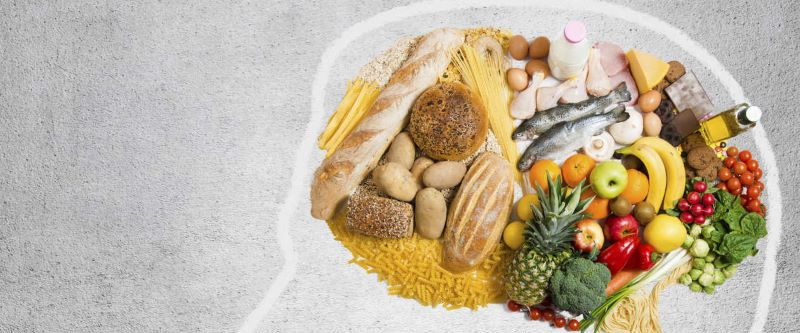

Curso de Introducción al Desarrollo Web: HTML y CSS
Grado Universitario en Magisterio de Educación Primaria
Técnico Superior en Nutrición y dietética

Aficiones
Leer es uno de mis hobbies. Paula Hawkins es una de mis autoras favoritas, siendo alguno de sus títulos La chica del tren o Escrito en el agua.
Otra de mis aficiones, es hacer yoga. Abogo por el principio Mens sana in corpore sano. Permitidme compartir una de las profesionales que me acompaña cada semana: Xuan Lan.
Patinar es una de las actividades que más me divierte realizar al aire libre. Haz clic aquí si quieres conocer los mejores lugares para patinar en Madrid.